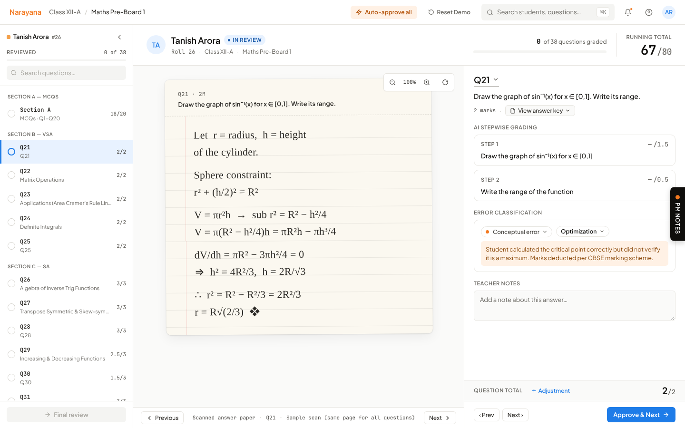
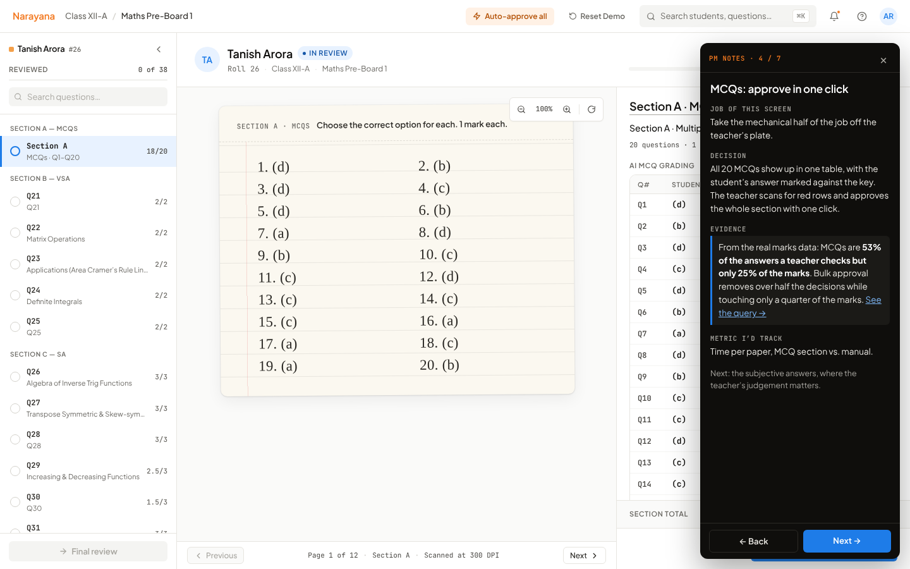

The AI marks the papers. The teacher only checks what matters.
LOAM grades CBSE Class XII Maths papers step by step, the way the board does. The teacher approves the routine work in bulk and spends her time where her judgement counts. This prototype was used to pitch LOAM to Narayana Educational Institutions, and it won the contract.
Every screen has a PM notes panel explaining the decision behind it. Best on a laptop. Student names are invented.

Start from the data, not the screens
Before designing the review flow, I looked at how one real Class XII Maths pre-board actually gets marked: 30 students, 38 questions, 1,140 answers.
Over half of what a teacher checks is worth only a quarter of the marks. So: approve MCQs in one click.
About half in the 3-, 4- and 5-mark sections. Right/wrong grading can't work here. So: the AI marks step by step, and every step can be edited.
"Application of Derivatives" lost the class the most marks. So: grading data feeds the next product, class analytics.
Source: SQL over the demo's marks data. See the queries · results.
Three decisions that shaped it
The person using the screen (a Maths teacher) is not the person deciding to buy (school leadership). Each decision had to work for both.
Load the school's rules before grading anything
LOAM reads the CBSE marking scheme, the teacher's answer key and the school's own grading guidelines first. In the pitch, Narayana's guidelines were dropped in live.
WhyThe buyer's first question is "will it mark the way we mark?" This answers it before a single paper is graded.
Check only what the AI isn't sure about
MCQs are approved as a block. The teacher's attention goes to the written answers.
WhyThat's where the time goes and where the marks are: 53% of decisions, 25% of the marks.
Every mark has a reason, and every mark can be changed
Written answers show AI marks per step, with the reason for each deduction. The teacher can edit any step, tag the error type and add a note.
WhyTeachers won't accept marks they can't see the logic behind. And the error tags become the data for class analytics.
Built to be understood without me in the room
A recruiter or engineer can click through on their own. The PM notes panel on each screen covers:
- Job of the screen: what it has to achieve
- Decision: what I chose to do
- Evidence: the data or reasoning behind it
- Metric: how I'd know it's working

The flow
Eight screens, from loading the rubric to a finished class. Click any screen to jump in.